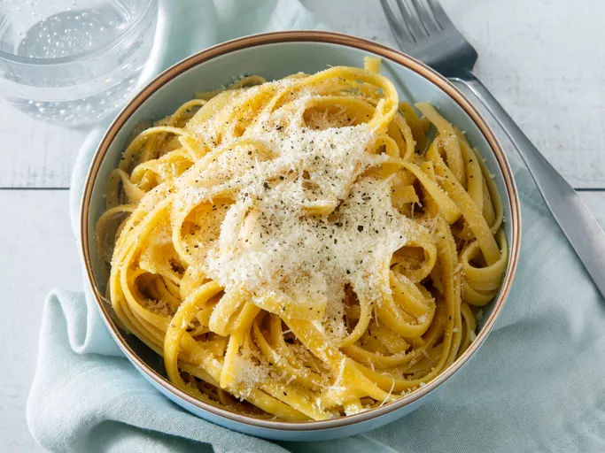

Buttered Noodles

Description
Buttered noodles are simple to make with your favorite pasta, butter, Parmesan cheese, salt, and pepper for a quick and easy dish. Fresh herbs and a little lemon juice could be added to amp up the flavor.
Perfect to serve either as-is or alongside steak, chicken, or meatballs.
Ingredients
- 16 oz package of Noodles (any)
- 6 tbsp butter, cut into pieces (salted or unsalted)
- 1/3rd cup grated parmesan
- Salt (unless using salted butter) and ground black pepper to taste
Directions
- Gather ingredients.
- Fill a large pot with lightly salted water and bring to a rolling boil.
- Stir in noodles, bring back to a boil, and cook pasta over medium heat until tender yet firm to the bite, 8 to 10 minutes.
- Drain and return pasta to pot. Mix butter, Parmesan cheese, salt, and pepper into pasta until evenly combined.
- Serve hot and enjoy!